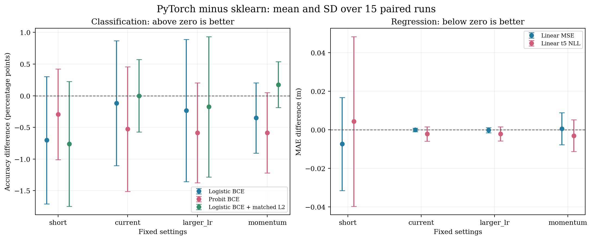

数据划分种子为 [0, 1, 7, 21, 42]，SGD mini-batch 打乱种子为 [0, 1, 42]。每个设置对应 15 次成对实验，共 300 次 PyTorch 训练；每次均使用完整训练集，不做交叉验证，不根据测试分数筛选“最好的一次”。分类为 455/114，回归为 85/22。特征标准化仅拟合训练数据，保留概率 clip 和梯度 clip。
当前固定参数下，sklearn logistic 的平均准确率为 98.25%，PyTorch logistic 为 98.13%（差 -0.12 个百分点），probit 为 97.72%（差 -0.53 个百分点）。匹配 L2 的 PyTorch 对照为 98.25%，与 baseline 的平均差为 +0.00 个百分点。无 L2 的 sklearn 数值拟合参考平均准确率为 95.26%，说明更充分地降低无惩罚训练损失不保证测试准确率更好。
当前 MSE SGD 的平均 MAE 为 0.188254 m，baseline 为 0.188275 m，差 -0.000021 m；平均训练 MSE 距最小二乘最优值仅 3.44e-06。这与同一训练目标应得到接近的解相符。t 损失的平均 MAE 为 0.186114 m，较 baseline 差 -0.002161 m，但各次差值范围为 -0.006164 至 +0.004691 m，并非每次都更好。
参数会改变优化误差和随机波动：50 轮配置的 MSE 平均训练目标差为 3.66e-03，明显大于当前 200 轮配置。它的平均测试 MAE 虽然更低，但不能据此宣称算法普遍优于最小二乘。momentum 配置同时改动 momentum 和 batch，固定划分下、仅改变打乱种子时，MSE MAE 的平均标准差为 0.008233 m，当前配置为 0.000581 m，前者的随机波动更大。
这些成对实验与数值核验支持：当前配置的差距基本合理，未发现 PyTorch 实现造成系统性劣势；应结合训练目标是否充分优化、正则化是否匹配和不同划分的波动解释结果。
| 设置 | Epoch | 分类初始 LR | 回归初始 LR | 分类 / 回归 Batch | Momentum |
|---|---|---|---|---|---|
| short | 50 | 0.03 | 0.01 | 64 / 32 | 0.0 |
| current | 200 | 0.05 | 0.03 | 64 / 32 | 0.0 |
| larger_lr | 200 | 0.1 | 0.05 | 64 / 32 | 0.0 |
| momentum | 200 | 0.05 | 0.03 | 32 / 16 | 0.9 |
学习率均按 lr0/(1+epoch_index/100) 衰减；权重初始化为零。SGD seed 改变 mini-batch 顺序，split seed 改变训练/测试划分。
分类的 baseline 是默认 L2、C=1 的 sklearn logistic，回归的 baseline 是 sklearn 最小二乘线性回归。表中差值为 PyTorch − baseline，分类以百分点（pp）表示、回归以米表示。均值和范围均来自同一划分下的成对比较。
| 设置 | PyTorch 模型 | Baseline 均值 | PyTorch 均值 | 平均差值 | 最小 / 最大差值 |
|---|---|---|---|---|---|
| short | Logistic BCE | 98.25% | 97.54% | -0.70 pp | -2.63 pp / +0.88 pp |
| short | Probit BCE | 98.25% | 97.95% | -0.29 pp | -0.88 pp / +0.88 pp |
| short | Logistic BCE + matched L2 | 98.25% | 97.49% | -0.76 pp | -2.63 pp / +0.88 pp |
| short | Linear MSE | 0.188275 | 0.180931 | -0.007344 | -0.042063 / +0.023821 |
| short | Linear t5 NLL | 0.188275 | 0.192595 | +0.004320 | -0.044809 / +0.068957 |
| current | Logistic BCE | 98.25% | 98.13% | -0.12 pp | -1.75 pp / +1.75 pp |
| current | Probit BCE | 98.25% | 97.72% | -0.53 pp | -2.63 pp / +0.88 pp |
| current | Logistic BCE + matched L2 | 98.25% | 98.25% | +0.00 pp | -0.88 pp / +0.88 pp |
| current | Linear MSE | 0.188275 | 0.188254 | -0.000021 | -0.001804 / +0.001659 |
| current | Linear t5 NLL | 0.188275 | 0.186114 | -0.002161 | -0.006164 / +0.004691 |
| larger_lr | Logistic BCE | 98.25% | 98.01% | -0.23 pp | -1.75 pp / +1.75 pp |
| larger_lr | Probit BCE | 98.25% | 97.66% | -0.58 pp | -2.63 pp / +0.00 pp |
| larger_lr | Logistic BCE + matched L2 | 98.25% | 98.07% | -0.18 pp | -1.75 pp / +1.75 pp |
| larger_lr | Linear MSE | 0.188275 | 0.188095 | -0.000180 | -0.002223 / +0.002187 |
| larger_lr | Linear t5 NLL | 0.188275 | 0.186181 | -0.002094 | -0.006103 / +0.005099 |
| momentum | Logistic BCE | 98.25% | 97.89% | -0.35 pp | -1.75 pp / +0.00 pp |
| momentum | Probit BCE | 98.25% | 97.66% | -0.58 pp | -1.75 pp / +0.00 pp |
| momentum | Logistic BCE + matched L2 | 98.25% | 98.42% | +0.18 pp | +0.00 pp / +0.88 pp |
| momentum | Linear MSE | 0.188275 | 0.188867 | +0.000592 | -0.014553 / +0.013369 |
| momentum | Linear t5 NLL | 0.188275 | 0.185245 | -0.003030 | -0.014191 / +0.011923 |

误差线为 15 次成对实验的标准差，用于描述稳定性，不是置信区间。同一划分的三次训练共享测试集，不同划分也有样本重叠，因此没有把这些结果当成 15 个独立样本做显著性检验。
不能仅凭一个测试分数判断实现是否正确。分类测试集只有 114 条，每多错一条就相差约 0.88 个百分点。默认 sklearn logistic 带 L2，而作业的 PyTorch logistic 只有 BCE，两者目标不同；另外保存了无 L2 的 sklearn 对照，并增加匹配 C=1 的 PyTorch L2 诊断模型，其目标为平均 BCE + ||w||²/(2n)，不惩罚偏置。
无惩罚 logistic 在可分或近可分训练集上可能没有有限、稳定的极大似然参数；这里的 sklearn 无 L2 结果是数值拟合参考，不要求有限步 SGD 与其系数完全一致。Probit 改变了概率链接，也不应要求测试准确率与 logistic 完全相同。
MSE 线性回归与 sklearn 最小二乘的训练目标相同，应在充分优化后接近同一个解。下表直接比较训练目标值与数值参考解；较大的目标差说明训练预算或优化参数不足，不能把差异全部归因于样本波动。t 损失用独立 SciPy BFGS 求解作为优化参考，其训练目标与 MSE 不同，因此不保证测试 MAE 更小。
| 设置 | 模型 | 平均训练目标差 | 最大训练目标差 |
|---|---|---|---|
| short | Logistic BCE | 1.039e-01 | 1.074e-01 |
| short | Logistic BCE + matched L2 | 3.758e-02 | 3.982e-02 |
| short | Linear MSE | 3.662e-03 | 5.608e-03 |
| short | Linear t5 NLL | 7.498e-03 | 9.867e-03 |
| current | Logistic BCE | 7.062e-02 | 7.528e-02 |
| current | Logistic BCE + matched L2 | 8.996e-03 | 9.427e-03 |
| current | Linear MSE | 3.440e-06 | 9.473e-06 |
| current | Linear t5 NLL | 1.222e-06 | 2.951e-06 |
| larger_lr | Logistic BCE | 6.224e-02 | 6.758e-02 |
| larger_lr | Logistic BCE + matched L2 | 3.741e-03 | 4.247e-03 |
| larger_lr | Linear MSE | 6.574e-06 | 1.467e-05 |
| larger_lr | Linear t5 NLL | 1.858e-06 | 5.235e-06 |
| momentum | Logistic BCE | 4.705e-02 | 5.301e-02 |
| momentum | Logistic BCE + matched L2 | 6.663e-05 | 2.138e-04 |
| momentum | Linear MSE | 4.026e-04 | 8.590e-04 |
| momentum | Linear t5 NLL | 1.294e-04 | 3.601e-04 |
runs.csv 保存每次训练的指标、成对差值、梯度范数和目标差；baseline_runs.csv 保存各划分的 baseline；parameters.json 保存模型参数；test_predictions.csv 和 split.csv 可用于重算指标；aggregate.csv 是汇总。既有单次作业实验保存在上一级目录。